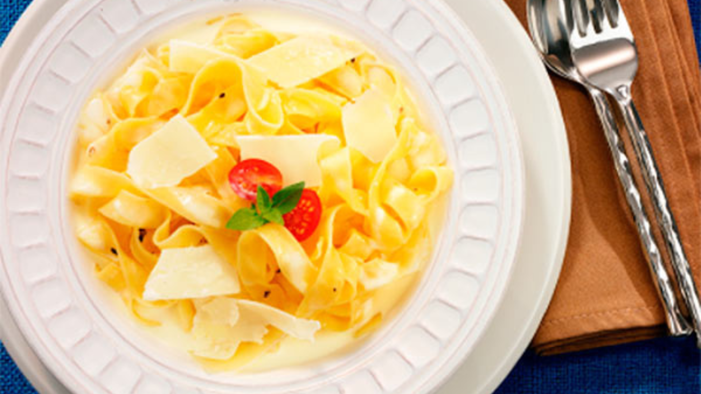
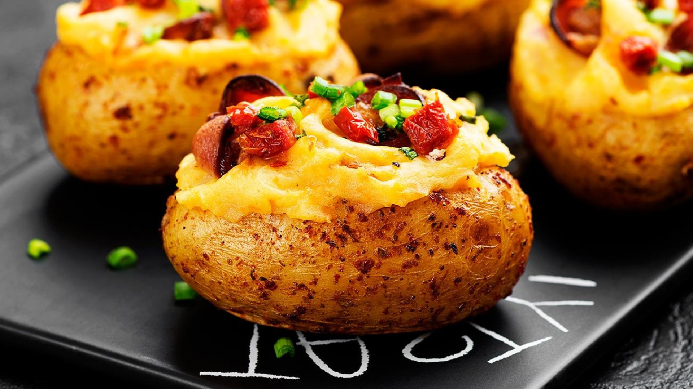
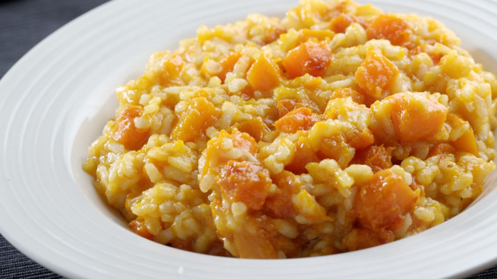

Jantar
Fettuccine ao Grana Padano

Ingredientes
- 1/3 do pacote de fettuccine (cerca de 165g)
- 1 colher (sopa) de manteiga
- 100 gramas de Queijo Grana Polenghi em lascas
- ¾ xícara (chá) de creme de leite fresco
- Sal a gosto
- Pimenta-do-reino a gosto
- Noz moscada ralada a gosto
Modo de preparo
- Cozinhe o macarrão conforme a recomendação da embalagem. Escorra.
- Em uma frigideira grande, aqueça a manteiga.
- Junte o macarrão escorrido, o Queijo Polenghi e o creme de leite.
- Cozinhe, misturando com a ajuda de 2 colheres, até o queijo derreter.
- Sirva em seguida.
Batata Recheada

Ingredientes
- 2 batatas médias cozidas
- pimenta-do-reino a gosto
- 180 g de queijo mussarela
- 1/2 lata de creme de leite
- sal a gosto
- 1 ovo
- bacon frito a gosto
- cebolinha a gosto
Modo de preparo
- Retire a polpa das duas batatas cozidas, deixando uma cavidade em cada uma, reserve.
- Em um recipiente, misture as polpas da batata com sal, pimenta, ovo, queijo mussarela, bacon frito e creme de leite, misture bem.
- Em um tabuleiro, coloque as duas batatas e distribua em cada cavidade um pouco de queijo mussarela, a mistura das polpas, bacon frito, mais um pouco de queijo mussarela por cima, bacon e finalize com cebolinha picada a gosto.
- Leve ao forno (230° C), por cerca de 20 minutos.
Risoto de Frango

Ingredientes
- 1 peito de frango cozido e desfiado
- 1 lata de milho verde
- 8 azeitonas médias sem caroço
- coentro
- cebola
- 1 sache de pomarola tradicional
- 1 tablete de caldo de frango
- arroz cozido
- alho
- sal
Modo de preparo
- Cozinhe o peito de frango com sal e o caldo de galinha.
- Reserve a água do caldo e desfie o frango.
- Em uma panela refogue o alho e a cebola.
- Acrescente o sachê de pomarola, 300 ml do caldo do peito, azeitonas e o milho.
- Mexa até misturar bem.
- Acrescente o arroz cozido, mais ou menos 4 xícaras.
- Mexa novamente, misturando bem.
- Coloque em uma travessa.